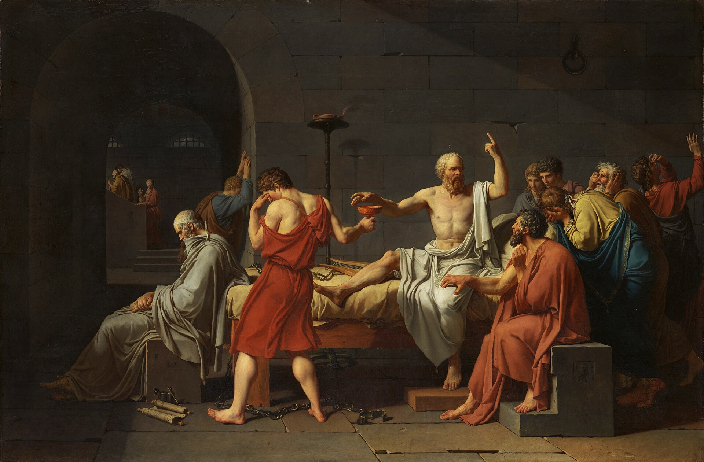

In 1895, Emile Durkheim made an argument that seemed, to most of his contemporaries, obviously absurd. Crime, he argued, is not merely an unfortunate feature of social life that well-organized societies should aspire to eliminate. Crime is a normal feature of social life. Its presence is necessary for the maintenance of social order, and a society entirely without crime is both impossible and undesirable. It remains one of the most counterintuitive arguments in social thought.
What could Durkheim possibly mean? His argument turns on his earlier distinction between acts that violate the collective conscience and acts that merely violate individual interests. Acts that societies define as crimes are acts that provoke the collective moral response, the shared outrage that reaffirms the community's values. When a crime is committed and punished, the community's response is not merely the deterrence of future offenders; it is a ritual reaffirmation of the values that the crime violated. Without crime, there would be nothing to reaffirm. Moreover, what counts as criminal is not fixed. As the most serious violations become rarer, acts that were previously merely undesirable become crimes, because the community's sensitivity to moral violation increases as serious offense becomes less frequent.
Durkheim identifies two positive functions that crime and deviance perform. The first is boundary maintenance. The collective response to deviance, punishment, condemnation, exclusion, reaffirms the community's shared values and clarifies the moral boundaries that define the community's identity. The second is social change. Today's heretics are sometimes tomorrow's saints. Acts that are deviant in one era may become normative in the next, as the moral framework of the community evolves. The deviant who challenges established norms plays an important role in that evolution. Without deviants, there is no social learning about what values should actually govern social life.

Durkheim’s hardest case for the claim that crime is normal is Athens in 399 B.C. Athenian law made Socrates a criminal, Durkheim says, and under that law the verdict was just. Yet the offence, free thinking, helped his own city as well as humanity: it cleared ground for a morality and a faith Athens needed, since its inherited customs no longer suited how Athenians actually lived.
The example does two jobs in the argument. It shows that a society’s legal verdict and its long-run interest can point in opposite directions, and it shows deviance functioning as a rehearsal for a morality that has not yet arrived. Durkheim is not defending every deviant; he is making a claim about the structure of collective sentiment. What, on his account, distinguishes a Socrates from an ordinary offender at the moment of the trial, when no one yet knows which morality will win?
Robert Merton, writing in 1938, offered a different account of deviance focused on the structural conditions that produce it. American culture, Merton argued, places enormous emphasis on the goal of material success, while the legitimate means for achieving that success (education, career, hard work) are not equally available to all members of society. This gap between culturally approved goals and structurally available means produces strain, which individuals respond to in different ways.
This typology has proven enormously influential in the sociology of crime and deviance, partly because it separates two questions people usually collapse into one: what someone wants, and how they are willing to get it. Innovation and rebellion are the adaptations most likely to look like crime from the outside. Ritualism and retreatism can be entirely legal and still count, on Merton's account, as adaptations to the same structural strain.
Durkheim's boundary maintenance, one of Merton's adaptations, or labeling theory? Judge by the mechanism described, not by whether the behavior sounds bad.
Deviance is a broader category than crime, and three frameworks explain why it persists for very different reasons: Durkheim's account of what a community's response to wrongdoing accomplishes, Merton's account of what happens when a culture's goals outrun its available means, and labeling theory's account of who holds the power to call an act deviant in the first place. None of the three requires assuming that deviants are broken people. All three treat deviance as something social life produces, structurally, again and again.